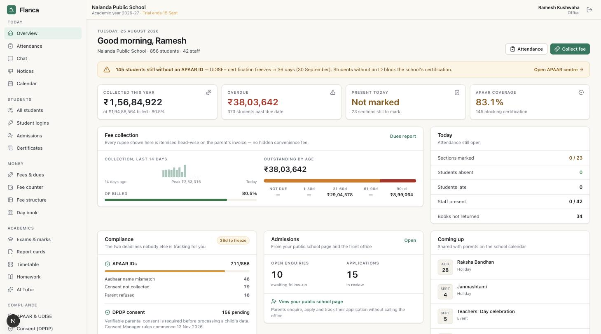

The school system
Admissions, fees, receipts with gap-free serials, attendance in one tap that works with no signal, exams, report cards in your format, certificates, timetable, library, transport.
APAAR coverage, DPDP consent and UDISE+ exports included — not an add-on.
See the school system →